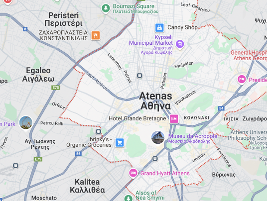

Interactive Map
The Geo Gems interactive map lets you explore unique
and hidden locations around the world, known as "geo gems."
You can interact with the map by clicking on markers to discover
special places, each with its own description and significance.
Whether it's a natural wonder or a hidden cultural gem, this map
offers an exciting way for you to uncover and explore new, off-the-beaten-path locations.
